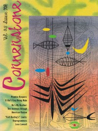

CMnexus
:
Contemporary Christian culture, music, and media.
Magazines
Profiles
Dove Awards
cmnexus.org
CM
nexus
→
Magazine list
→
Cornerstone
→
Issues
Cornerstone
1996, vol. 25, iss. 108
< -- Prev
Issue list
Next -- >
Cover

Writers in this Issue
Tammy Boyd
David Canfield
Edward Shimborske III
Album Review:
Crashdog
-
Cashists, Fascists, and Other Fungus
by Edward Shimborske III
Danielson Familie
-
A Prayer for Every Hour
by David Canfield
Andy Offutt Irwin
-
Banana Seat
by David Canfield
Jason & the G-Men
-
Walkin' The Beat
by David Canfield
This Train
-
You're Soaking In It
by David Canfield
The Innocence Mission
-
Glow
by Tammy Boyd
Ordained Fate
-
Glimmer of Hope
by David Canfield
The Mighty Clouds of Joy
-
Power
by David Canfield
Fleming & John
-
Delusions of Grandeur
by David Canfield
Black Cherry Soda
-
Grin
by David Canfield
The Waiting
-
Blue Belly Sky
by David Canfield
Starflyer 59
-
Gold
by David Canfield
Crux
-
Failure to Yield
by David Canfield
Relevant Links
Official web site of Cornerstone
You may be able to find
Cornerstone
in a library near you:
check
Worldcat
< -- Prev
Issue list
Next -- >
CMnexus
(noun)
The magazine index
of modern music
and Christianity
© 2011 CMnexus. Last updated August 2025.
Contact:
Rants and other correspondence to:
editor -AT- cmnexus
-DØT- org
About